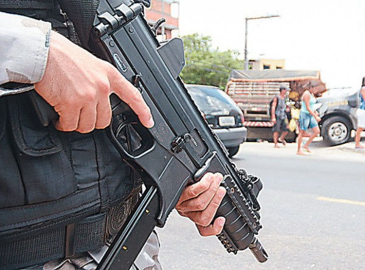

A capital paraense possuia muitas belezas e problemas,possuindo,seus belos pontos turísticos,comida exótica,mas também violência em determinados pontos.Tudo se encontrava relativamente normal,era mais uma cidade brasileira com seus prós e contras,até que essa pequena paz acabou devido ao surgimento de uma figura comum que havia se tornado um pesadelo;;o Carro Prata.Por todos os lados,principalmente pelas periferias as pessoas já ficavam atentas caso passasse um carro da cor prata nas suas ruas,civis que estavam sentado em frente de casa rapidamente entravam e nos grupos das redes sociais rapidamente se espalhavam mensagens sobre chacinas acontecendo,algumas eram fake news e outras,infelizmente,eram verdade.
Reinado de terror
Relatos sobre um veículo com essas características deixando um rastro de morte já circulavam na época,mas foi em novembro de 2014 que os boatos se tornaram realidade,logo após um cabo da polícia ser assassinado por 3 indivíduos.Na mesma noite não apenas um,mas vários carros principalmente prateados se espalharam em busca de vingança por diversos bairros como Guamá e Terra Firme,onde executaram 11 homens.Aquela madrugada era só o começo de muitas,anos se passaram,mais retaliações ocorrem,até que em 2018 o "carro prata" chega ao seu auge chegando a fazer um número não exato de 40 vítimas,podendo ultrapassar 60,todas elas somente no mês de maio.Mais episódios sangrentos ocorrem,como os 8 mortos no Tapanã e a famosa chacina do Guamá que resultou em 11.Some esses com vários outros casos e verá um "carro" facilmente ceifando mais de 100 vidas e estabelecendo um verdadeiro reinado de terror.
Quem e por que estavam naquele carro?

O tempo passou,foram identificados não 2 ou 3, (e não 1 ou 2 carros pratas,na verdade,eles nem usavam somente carros) mas vários integrantes,os quais eram justamente policiais.Eles haviam formado um enorme grupo para aparentemente vingar a morte de seus companheiros mortos pela criminalidade,mas a máscara de justiceiros caiu quando na verdade se descobriu a formação de uma milícia,a qual matava não só criminosos,mas também,muitos cidadãos comuns,agindo tanto para vingar quanto para amedrontar,chegando até a dominar territórios,cobrando uma "taxa para manter a segurança local". Através de operações como a chamada "lenda urbana" e diversas prisões efetuadas,foi apenas 6 anos depois,em 2020,que a milícia foi perdendo força e o "carro prata" parou de andar pelas ruas de Belém,deixando uma pequena sensação de segurança,não como se a cidade tivesse deixado de ser muito violenta,mas como um alívio por saber que já houveram dias piores.